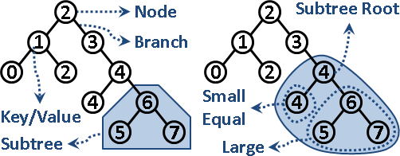
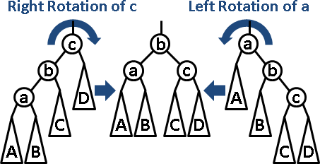
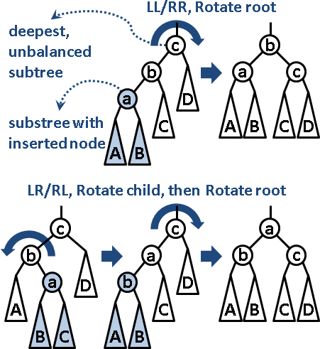

Search Tree
程度★ 難度★★★
Binary Search Tree
請先參考「Binary Tree」。
二元搜尋樹。置放大量數字並且進行排序的資料結構。原理是Divide and Conquer，樹根居中，左子樹較小或相等，右子樹較大，然後遞迴分割下去。
插入、刪除、搜尋的時間複雜度等同於二元搜尋樹的高度。資料可以動態增加和減少，二元搜尋樹的高度亦會變動，因此時間複雜度最差為O(N)，最佳為O(logN)。所有節點連成一線的時候是最差的，所有節點形成full tree是最佳的。
空間複雜度等同於節點數目，空間複雜度是O(N)。

尋找極小值、極大值，從樹根開始往左小孩走到底、往右小孩走到底就可以了。時間複雜度等同於二元搜尋樹的高度。
樹葉可以額外建立線索（Thread），左小孩連往次小節點，右小孩連往次大節點，如此就能依照大小順序走訪元素。建立線索不影響時間複雜度與空間複雜度。
最佳二元搜尋樹（Optimum Binary Search Tree）
如果二元搜尋樹的資料不會變動，則可以依照每個節點被搜尋到的次數（頻率），使用Dynamic Programming求得結構最佳的二元搜尋樹，藉此減少搜尋時間。建立時間為O(N^2)。
UVa 10304
擴充資訊（Augmented Tree）

二元搜尋樹的每個節點，可以擴充資訊，例如子樹的高度、節點總數、權重和、權重最大值、權重最小值、……
排名（Ranking）
二元搜尋樹雖然有排序的功效，但是卻沒有排名的功效。想知道資料的排名，就要在每個節點新增一個變數，記錄其子樹的節點個數，如此便可以用Divide and Conquer的方式求得每筆資料的排名。不影響時間複雜度與空間複雜度。
UVa 10909
二進位數字表示法

二進位數字一一對應到二元搜尋樹的節點。
如此就能以陣列實作二元搜尋樹。優點是程式碼簡潔，效率高，缺點是浪費記憶體空間、樹的高度受限制。
UVa 712
AVL Tree
http://www.qmatica.com/DataStructures/Trees/AVL/AVLTree.html
平衡二元搜尋樹。樹上每個節點（每棵子樹），其左右兩子樹的高度差最多為一。此舉造成整棵樹的高度為O(logN)，讓各項操作穩定運行，不會產生忽快忽慢的極端現象。
每當插入節點，高度差超過一，就馬上運用右旋轉或左旋轉調整高度；旋轉一至兩次，就使整棵樹平衡。旋轉不影響排序。
找到最深、高度差超過一的節點（子樹），依據插入節點的路線，可分為四類情況。左左/右右：旋轉子樹樹根，立即平衡。左右/右左：先旋轉子樹樹根的左/右小孩，成為左左/右右，後續同前。
刪除節點則是反過來做。
插入、刪除、搜尋的時間複雜度為O(logN)。旋轉、平衡的時間複雜度是O(1)，至於空間複雜度仍是O(N)。
UVa 11688
Red-Black Tree
紅黑樹的功效等同平衡二元搜尋樹，但是效率更勝一籌。
http://www.cs.princeton.edu/~rs/talks/LLRB/RedBlack.pdf
可以直接使用STL的set、map，但是沒有排名功能。
可以直接使用GNU extension的rb_tree，order_of_key和find_by_order為排名功能。
http://gcc.gnu.org/onlinedocs/libstdc++/ext/pb_ds/index.html
http://gcc.gnu.org/onlinedocs/libstdc++/ext/pb_ds/assoc_examples.html
Skip Lists
置放大量數字並進行排序的資料結構。不用樹狀結構，而改用高度不同的Linked List來連接資料。資料結構在概念上可以表示成Left Child-Right Sibling Binary Tree的模式。時間複雜度與空間複雜度與Binary Search Tree皆相同，但是實際運作效率比Binary Search Tree還要好。
Splay Tree

splay是按照規則，把一個節點不斷雙旋至根。插入、刪除之後立即splay，儘管樹沒有完全平衡，插入、刪除的均攤時間複雜度是O(logN)。
splay改為單旋，均攤時間複雜度並非O(logN)，卻是個不錯的偷懶方式。
運用splay拆接子樹，時間複雜度是O(logN)，是主要特色。